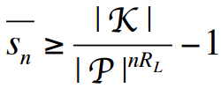

http://netlab.cs.ucla.edu/wiki/files/shannon1949.pdf
Message size (1-20)
Language entropy (0-1)
Keys (1-256)
Message length (n):
Language entropy (HL):
Language redundancy (D):
Keys (|K|):
Plaintexts (|Pn|):
Messages:
Ciphertexts (|C|):
Unicity  :
:
Spurious keys lower bound  :
Spurious keys per ciphertext (sn):
Plot sample: